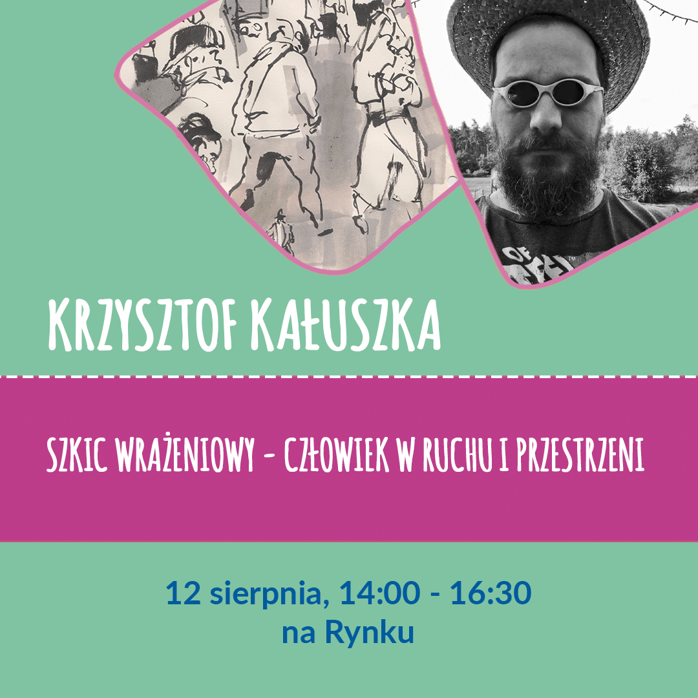
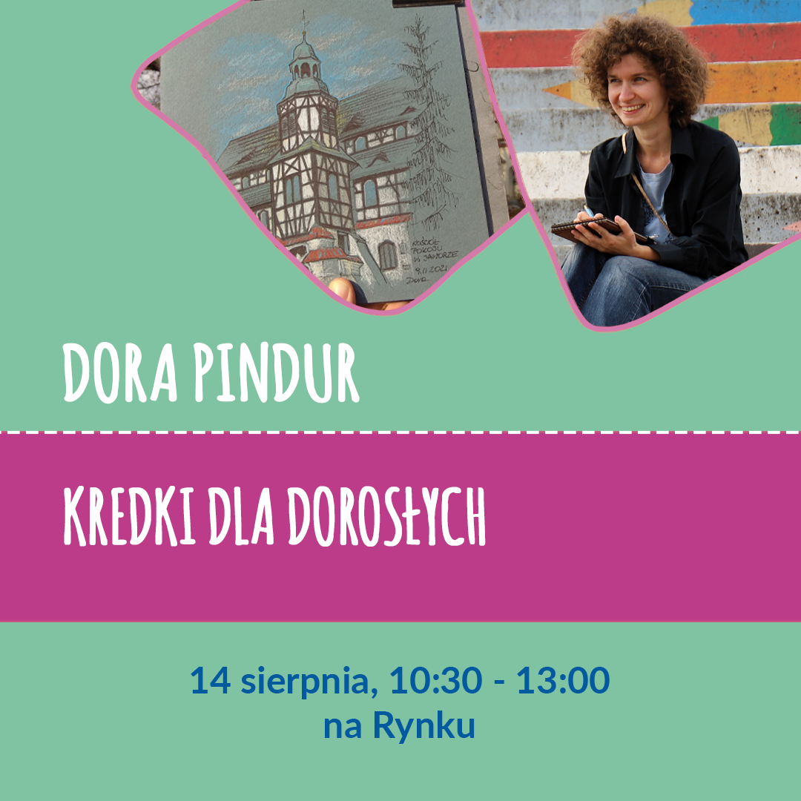

W dniach 12-15 sierpnia 2023 w Świdnicy odbył się drugi Festiwal Miejskiego Szkicowania, w którym wzięło udział ponad 150 osób z kilkunastu krajów. W ramach imprezy odbyło się 10 warsztatów, 2 wystawy, pokazy akwareli, prezentacje, targi artykułów plastycznych, sketch-walki, spotkania drink and draw, a nawet pchli targ.
Dziękujemy serdecznie wszystkim uczestnikom za stworzenie wspaniałej, kreatywnej i przyjacielskiej atmosfery i za cudowne szkice! Dziękujemy wolontariuszom za ich nieocenioną pomoc. Dziękujemy miastu Świdnica, patronom, sponsorom i partnerom za wsparcie, a Świdnickiemu Ośrodkowi Kultury za świetną współpracę przy organizacji tego wydarzenia.
Mamy nadzieję, że za rok również spotkamy się w Świdnicy!
A w międzyczasie zapraszamy na spotkania rysunkowe (sketch-walks) w różnych miastach Polski - informacje znajdziecie w grupie Urban Sketchers Poland na Facebooku.
W trakcie całego festiwalu będzie można zobaczyć wystawę szkiców polskich Urban Sketcherów w Galerii Fotografii Świdnickiego Ośrodka Kultury. Rysunki powstałe w trakcie festiwalu znajdą się na Wystawie Festiwalowej.
W holu Sali Teatralnej znajdować będzie się stoisko Romana Szmala, na którym można będzie przetestować akwarele Aquarius, oraz stoiska Caran d'Ache i Moleskine.
Osoby, które zakupiły festiwalową wejściówkę, otrzymają identyfikator zapewniający różne zniżki u naszych partnerów na targach oraz w lokalnych kawiarniach i restauracjach, a także darmowe wejście na wieżę ratuszową ze wspaniałym widokiem. Wszystkie miejsca ze zniżkami są zaznaczone na mapce poniżej.
Hotele Fado oraz Park oferują 10% zniżki na hasło "Urban Sketchers" przy bezpośredniej rezerwacji telefonicznej.
Sklep Wiesław Waszak Materiały do Twórczości Plastycznej we Wrocławiu (Plac Polski 3/4, budynek ASP) oferuje wszystkim uczestnikom wydarzenia rabat 10% na produkty Cretacolor od 12 do 31 sierpnia.
W związku z licznymi pytaniami o zapisy na festiwal w Świdnicy donosimy, że zarówno bilety na festiwal jak i na wszystkie warsztaty zostały wyprzedane w 24 godziny! Bardzo Wam dziękujemy za zainteresowanie naszą imprezą i zachęcamy osoby, które nie zdążyły kupić wejściówki, żeby mimo wszystko do nas dołączyły. Większość aktywności takich jak dema, prelekcje i sketchwalki będzie darmowa i ogólnodostępna. Będzie też można testować i kupować materiały plastyczne na stoiskach naszych sponsorów, brać udział w konkursach i obejrzeć wystawę szkiców. Cały plan festiwalu z darmowymi aktywnościami zaznaczonymi na niebiesko znajduje się powyżej.
Szkicowanie akwarelowe we wnętrzu
Mistrz akwareli Krzysztof Ludwin na żywo zaprezentuje i opowie o swojej technice szkicowania w sali widowiskowej Teatru Świdnickiego. Uczestnicy będą mogli obserwować proces na dużym ekranie.
Wstęp wolny.
O prowadzącym
Krzysztof Ludwin - rodowity krakowianin, pracą i twórczością nierozerwalnie i nieustannie związany z Krakowem. Od ponad ćwierćwiecza jego największą pasją jest akwarela, której poświęcił swoją twórczość artystyczną, a także pracę doktorską. Studiując dzieła klasyków tej techniki, wciąż eksperymentuje poszukując nowych środków wyrazu. Jego obrazy zdają się być barwnymi poematami, których najważniejszym bohaterem jest światło i kolor. Z niezwykłą umiejętnością oddaje przezroczystość powietrza, subtelną grę światła i cienia, zmienne refleksy barwne. Intuicyjnie wychwytuje z rzeczywistości to co ulotne i utrwala za pomocą akwareli krótkotrwałe wrażenie i nastrojowość chwili. Tematami jego prac jest przede wszystkim krajobraz miejski i pejzaż.
Instagram: kristof_ludwin
Szkicowanie akwarelowe w plenerze
Demonstracja miejskiego szkicowania akwarelą. Podczas pokazu artystka opowie o tym, na czym skupia się wybierając miejsce i obiekt do malowania.
Wybór kompozycji. Krótka informacja o materiałach używanych przez artystkę. Pokaz technik szkicowania akwarelą które pozwalają szybko oddać klimat miejsca. Odpowiedzi na pytania.
Wstęp wolny
O prowadzącym
Svitlana Lagutina - malarka - akwarelistka, graficzka. Urodzona w Kijowie (Ukraina) w 1979 roku. Ukończyła Kijowski Narodowy Uniwersytet Budownictwa i Architektury w specjalności Architektura w 2005 r. Od roku 2015 mieszka i pracuje w Polsce. Jest laureatką kilku międzynarodowych konkursów malarskich w technice akwareli.
Svitlana to artystka, która przedstawia otaczający ją świat, najczęściej tworzy z natury. Ulubiona tematyka to portrety, kwiaty, plenerowe etiudy.
Instagram: svitanola_art
Na każdych zajęciach obowiązuje limit uczestników. Koszt pojedynczych warsztatów to 50zł. Można zapisać się na dowolną liczbę warsztatów. UWAGA - niektóre zajęcia nakładają się na siebie, prosimy sprawdzić grafik przed zapisaniem się!
O warsztacie
“Jak szkicować przekonujące wnętrza”
1. ANALIZA kompozycja, perspektywa, kolorystyka,cieniowanie
2. TECHNIKA SZKICOWANIA kredkami
3. TECHNIKA AKWARELOWA od jasnego do ciemnego
4. TRIKI NA WYKOŃCZENIE
Uczymy się
- szkicować przekonujące wnętrza
- mieszać i nakładać akwarele naciemne i jasne obszary
- tworzyć tekstury oraz definiować światła i cienie
Materiały
- 3-4 różne kolory kredek Pablo (lub innych nie-akwarelowych)
- papier akwarelowy 300gsm w formacie A4 (może być szkicownik)
- akwarele
pędzel do akwareli + pojemnik z wodą
- krzesełko lub mata do siedzenia
O prowadzącym
Bettina Ruppert jest niemiecką artystką współczesną, zamieszkałą w pięknym Hohenlohe. Zaczynała bardzo młodo i pracuje jako akwarelistka, projektantka i ilustratorka we własnej firmie.
Prowadzi również warsztaty i wystawia swoje prace.
Pejzaże oraz malowanie postaci to ulubione tematy jej twórczości. Przemienia zwykłych ludzi w bohaterów swojej twórczości. Jej cykl „Ludzie w pracy” jest tego doskonałym przykładem.
Wrażliwość, precyzyjna technika, talent i przede wszystkim silna wola są kluczem do jej sukcesu.
Wśród innych technik lub mediów jej ulubioną jest akwarela. Przyroda, ludzie wokół niej, przygody z podróży i warsztaty rysunkowe są dla niej źródłem inspiracji.
Jej credo: Nie trać czasu, rysuj ekspresyjnie i bądź kreatywny!
Instagram: bettina_draws
Brak miejsc

O warsztacie
“Szkic wrażeniowy - człowiek w ruchu i przestrzeni”
Jak wskazuje tytuł warsztatów, będą one dotyczyć rysowania człowieka w ruchu oraz umieszczania go w przestrzeni. Uczestnicy dowiedzą się, w jaki sposóbmyśleć o rysunku poruszającej się postaci i na jakie aspekty zwracać uwagę, a które pominąć. Będą mieli okazję nauczyć się obserwować ludzi i przestrzeń, aby lepiej zaplanować kompozycję w rysunku.
Podczas warsztatów skupimy się również na zastosowaniu różnych środków wyrazu, aby wzmocnić wrażenie ruchu. Porozmawiamy także na temat szkicu wrażeniowego i omówimy, czym on właściwie jest oraz jakgo stosować.
Przy wykorzystaniu ćwiczeń praktycznych, uczestnicy warsztatów będą mieli okazję wypróbować swoje umiejętności i nauczyć się, jak skutecznie przełożyć swoje spostrzeżenia na rysunek.
Materiały
- ołówki
- cienkopisy
- markery
- brushpeny
- tusz + akcesoria (pióra, patyczki, stalówki)
- papier do technik wodnych
- woda
O prowadzącym
Cześć! Jestem Krzysztof. Urodziłem się na Śląsku w 1982 roku. Od dziecka podążałem za moją miłością do gier i komiksów, nie rozstawałem się też z kartką i kredkami. Dzisiaj jestem przede wszystkim kreatywnym projektantem gier komputerowych. Jednak moją pasją i odskocznią od ekranu monitora są tradycyjne techniki rysowania i malowania. W wolnych chwilach przygotowuję młodzież do egzaminów z rysunku i malarstwa. Bez lęku mogę powiedzieć, że w rysunku interesuje mnie głównie temat człowieka i ruchu, ekspresyjne, reportażowe uchwycenie chwili.
Instagram: krzysztof_kaluszka_art
Brak miejsc
O warsztacie
“Czas trochę namieszać! Gwasz, akwarela i kredki w szybkich szkicach”
Na tych warsztatach uczestnicy będą mieli okazję poznać właściwości rożnych technik malarskich i rysunkowych oraz sposoby ich łączenia. Skupimy się na możliwie najlepszym wykorzystaniu niewielkiej ilości materiałów przy ograniczonej palecie barw. Dzięki połączeniu farb i kredek poeksperymentujemy z teksturami uzyskując ciekawe efekty. Będziemy też bawić się kolejnością nakładania warstw, bo urban sketching to nie tylko dodawanie koloru do konturu. Kompozycję można zbudować przy użyciu plam, a linie dodać w następnej kolejności. Od tego jak dobrze znamy nasze materiały, zależy ostateczny efekt, więc bawmy się i eksperymentujmy z nimi jak najwięcej!
Materiały
- gwasze: biel i 3 podstawowe kolory (ultramaryna, żółty, magenta) + opcjonalnie kolory, które lubicie (u mnie to błękit nieba, jasny pomarańcz, ochra, siena palona i indygo)
- akwarele: 3 podstawowe kolory
- kredki ołówkowe: najlepiej mieć kilka kredek o różnych właściwościach: zwykłe i wodorozpuszczalne. U mnie sprawdza się zestaw: żółta ochra, indygo lub inny ciemny błękit, fiolet, ciemna czerwień lub ciepły brąz.
- kredki Neocolor II Aquarelle (wodorozpuszczalne pastele woskowe)
- waterbrush
- papier gładki o gramaturze 140-240gsm, może być szkicownik
O prowadzącym
Justyna Wojnowska jest absolwentką Liceum Plastycznego w Poznaniu oraz miłośniczką zabytków. Uczestniczyła w międzynarodowych sympozjach Urban Sketchers w Porto i Amsterdamie, festiwalu rysunkowym Prague Sketch Fest, Prague Sketch Marathon, Sketchtour Schwäbisch Hall oraz w wielu innych wydarzeniach związanych z miejskim szkicowaniem. Była gościem Farindola International Arts Festival (Włochy) oraz rezydentką w Rennes (Francja). Jest organizatorką spotkań rysunkowych, a od 2018 roku prowadzi w całej Polsce warsztaty artystyczne dotyczące przede wszystkim szkicowania architektury oraz różnych technik malarskich i rysunkowych. Jest też autorką lekcji online na temat Urban Sketchingu zrealizowanych w ramach projektu “Sztuka dla każdego”, który został dofinansowany przez Ministerstwo Kultury i Dziedzictwa Narodowego.
Instagram: wojnowskajustyna
Brak miejsc
O warsztacie
“Akrobacje z pędzlem”
Nazwa moich zajęć powinna brzmieć “Akrobacje z pędzlem”. Jak kreatywnie postępować z farbą i łamać wszystkie zasady. Znajomość techniki dodaje nam pewności siebie i odwagi! Śmiech i błędy są dozwolone, a nawet mile widziane!!!
Czego uczę na warsztacie? Brzmi trochę jak sprzątanie mieszkania! Wycieranie, czyszczenie, skrobanie na mokro i na sucho! Ale to, co robimy, jest o wiele przyjemniejsze niż sprzątanie, a brudne ręce są gwarantowane. W zależności od tematu pokażę wam, co możecie zrobić z techniką.
Materiały
- pędzel do akwareli ze szpicem
- akwarele
- papier do akwareli 300gsm
- szmatka lub ręcznik papierowy do wycierania pędzla
- pojemnik z wodą
O prowadzącym
Tine Klein jest Urban Sketcherką ze Szwajcarii. Już podczas studiów z zakresu Planowania Przestrzennego pracowała jako rysownik ds. urbanistyki i wizualizowała problemy społeczne dla instytutu badawczego. Wtedy zdała sobie sprawę, że jest artystką.
Dziś pracuje ze wszystkim, co zawsze może mieć przy sobie lub znaleźć w podróży, na przykład podstawki pod piwo lub kamienie rzeczne. W jej rękach wszystko staje się sztuką.
Tine Klein dużo podróżuje, zdobywając doświadczenie podczas studiów w wielu krajach. Najwięcej nauczyła się tam, gdzie jej jedynym językiem było pióro, bo kiedy brakuje słów, wyostrza się siła obserwacji.
Na prawie wszystko istnieje proste rozwiązanie, nawet jeśli czasem jest ono ukryte.
Sztuka powinna być ekspresyjna, zabawna i prosta. Tego Tine uczy na swoich kursach malarstwa.
Tine Klein pracuje jako wykładowca sztuki w Atelier Herz der Kunst, w Kunstverein Bremgarten oraz w Allensbach Art Academy. Wystawia swoje prace w Szwajcarii, Niemczech i USA.
Instagram: tine.klein
Brak miejsc
O warsztacie
“Kontur i kolor”
Kolor jest wyrazem emocji a czarno biały rysunek to gra intelektualna rysownika z tematem. Szkicowanie w terenie wodoodpornym pisakiem pozwala na wykadrowanie, zdefiniowanie motywu, który nas zafascynował. Uzupełnienie o abstrakcyjny, wyimaginowany kolor to przyjemność i relaks. Można owszem starać się oddać rzeczywistość, ale… po co (moim skromnym zdaniem). Tak więc szkicowanie, ćwiczenie umiejętności obserwacji i budowanie formy to ćwiczenie umysłu. Pokrycie rysunku czarno białego kolorem oddaje nasze emocje danej chwili. Możemy na moment zapomnieć o kłopotach. Tak więc ćwiczenie będzie polegało na wykonaniu rysunku na papierze akwarelowym najlepiej w szkicowniku i pokryciu go laserunkiem koloru. Amen.
Materiały
- akwarele
- wodoodporny pisak
- papier / szkicownik do akwareli
- pędzel + pojemnik z wodą
O prowadzącym
Krzysztof Ludwin - rodowity krakowianin, pracą i twórczością nierozerwalnie i nieustannie związany z Krakowem. Od ponad ćwierćwiecza jego największą pasją jest akwarela, której poświęcił swoją twórczość artystyczną, a także pracę doktorską. Studiując dzieła klasyków tej techniki, wciąż eksperymentuje poszukując nowych środków wyrazu. Jego obrazy zdają się być barwnymi poematami, których najważniejszym bohaterem jest światło i kolor. Z niezwykłą umiejętnością oddaje przezroczystość powietrza, subtelną grę światła i cienia, zmienne refleksy barwne. Intuicyjnie wychwytuje z rzeczywistości to co ulotne i utrwala za pomocą akwareli krótkotrwałe wrażenie i nastrojowość chwili. Tematami jego prac jest przede wszystkim krajobraz miejski i pejzaż.
Instagram: kristof_ludwin
Brak miejsc
O warsztacie
“Uchwycenie architektury akwarelą - jak radzić sobie ze skomplikowanymi tematami w krótkim czasie”
Podczas warsztatów przećwiczymy tworzenie szkiców architektonicznych przy użyciu akwareli. Głównym tematem będzie tworzenie kompozycji z uchwyceniem dominanty, uproszczenie skomplikowanych widoków oraz dobór spójnej kolorystyki. Przedstawię również najważniejsze aspekty malarstwa akwarelą oraz podzielę się techniką pracy z odpowiednią ilością wody, gęstością farby i budowania poczucia przestrzeni w obrazie. Po krótkim wstępie namalujemy jeden obraz w plenerze, a proces malowania przedstawię krok po kroku wykonując obraz pokazowy.
Warsztaty są skierowane zarówno dla początkujących jak i zaawansowanych osób w wieku dorosłym 18+.
Materiały
- farby akwarelowe (kolory: cadmium yellow, burnt sienna, violet, hookers green albo yellow green, cerulean blue albo manganese blue)
- paleta do mieszania farb lub talerz
- papier akwarelowy 300g format od a4 do a3
- kilka stron ze szkicownika
- ołówek
- deska do podklejenia papieru
- taśma malarska do podklejenia papieru
- pędzel + woda
O prowadzącym
Kasia Wiercinska
Jestem akwarelistką pochodzącą z Polski, obecnie mieszkającą w Oslo w Norwegii. Moim zawodem jest architektura, jednak postanowiłam podążać za marzeniami i zostać artystką.
Przez całe życie interesowałam się wieloma dziedzinami twórczości - od malarstwa i rzeźby po projektowanie architektoniczne. Od najmłodszych lat maluję akwarelą jako samouk. Jednak moja nowa artystyczna podróż rozpoczęła się w Christchurch w Nowej Zelandii, gdzie w latach 2019-2020 przeszłam profesjonalne szkolenie z akwareli.
Podróże są moją główną inspiracją. Zawsze staram się uchwycić piękno i atmosferę otaczającego krajobrazu, gdziekolwiek się udam. Dla mnie sztuka to świetny sposób na obcowanie z lokalnym krajobrazem, obserwowanie codziennych czynności i odczuwanie otaczającej nas energii. Malując staram się opowiedzieć historię miejsca dokładnie tak, jak chcę je zapamiętać, a więc nie zawsze dokładnie tak, jak ono wygląda. Moimi ulubionymi tematami są pejzaże miejskie i morskie, zwłaszcza z łodziami lub falami.
Bardzo lubię dzielić się swoją pasją z innymi. Nauczanie akwareli to świetny sposób, aby to zrobić. Obecnie udzielam prywatnych korepetycji w Oslo, jak również online. Prowadzę regularne zajęcia dla artystów na każdym poziomie - zarówno początkującym jak i zaawansowanym.
Instagram: kasia_wiercinska
Brak miejsc

O warsztacie
“Kredki dla dorosłych”
Wielu osobom kredki kojarzą się ze szkolnymi przyborami dla dzieci i bywają niedoceniane przez dorosłych artystów. Tymczasem to bardzo wszechstronne, uniwersalne i praktyczne medium zyskujące coraz większą popularność. Podczas warsztatów poznacie różne rodzaje kredek ołówkowych, sposoby posługiwania się nimi oraz łączenia ich z innymi technikami. Dowiecie się, jak bardzo są przydatne w urban sketchingu i dlaczego zawsze warto mieć choć kilka sztuk przy sobie. Pokażę wam kredkowe ćwiczenia, triki i różne rodzaje papieru odpowiednie dla tej techniki, a następnie pomogę wam w narysowaniu szkicu na żywo.
Materiały
- papier kraftowy (brązowy) 2 arkusze A4 (np. Leniar Szkicownik z pszczołą)
- papier do akwareli gładki 300g 1 arkusz A4 (np. Aurora Hot Press)
- kredki ołówkowe akwarelowe - kilka podstawowych kolorów plus biały (np. Mondeluz, Prismalo, Inktense)
- cienkopis wodoodporny
- waterbrush / pędzel i słoiczek z wodą
- podkładka A4 + klips
O prowadzącym
Dora Pindur - skrzypaczka i urban sketcherka. Doświadczenie rysunkowe zdobywała na kursach rysunku architektonicznego, warsztatach Urban Sketchingu oraz na ulicy - podczas niezliczonej ilości spotkań Urban Sketchers, podróżując po kraju i poza jego granicami. Brała udział w Prague Sketch Fest 2020, była też gościnną artystką częstochowskiego festiwalu Relacje. Jej rysunki można było obejrzeć na wystawach we Wrocławiu, Krakowie, Poznaniu, Częstochowie, Tucholi i Świdnicy. Jest miłośniczką rysowania (zwłaszcza architektury) i podróżowania, organizatorką wielu spotkań rysunkowych (również online), a także autorką artykułów promujących miejskie rysowanie w Polsce dla międzynarodowego magazynu Drawing Attention. Prowadzi warsztaty miejskiego szkicowania, kredek i akwareli. Zawsze ma przy sobie kieszonkowy szkicownik i coś do rysowania, na wszelki wypadek.
Instagram: dora_sketcher
Brak miejsc
O warsztacie
“Szkice w kadrach”
Szkicownik traktowany niczym aparat fotograficzny, ale rejestrujący rzeczywistość w sposób impresyjny, przetworzony, wyzyskujący z wad, błędów i niedociągnięć zalety nowego spojrzenia na rysunek. Szkicownik w podróży pieszej, kolejowej, autobusowej i takiej zwyczajnej wewnętrznej wyrażającej emocje za pomocą przetworzonych pejzaży miejskich i pozamiejskich. Szkicownik wypełniony sąsiadującymi ze sobą kadrami, które na siebie oddziałują i opowiadają o uchwyconych na kartce chwilach.
Materiały
- czarne cienkopisy
- szkicownik
- inne narzędzia według upodobania uczestników (farby, kredki, ołówki itp.)
O prowadzącym
Krzysztof Gawronkiewicz - grafik, malarz, storyboardzista, twórca komiksów. Absolwent Liceum Plastycznego, potem dwukrotnie student ASP w Warszawie (Wydział Architektury Wnętrz, Wydział Grafiki). Jest autorem rysunków do komiksów, m.in. “Mikropolis”, “Esencja”, “Achtung Zelig”. Swoje pierwsze komiksy zaczął tworzyć w szkole podstawowej.
Artysta był wielokrotnie nagradzany na Międzynarodowym Festiwalu Komiksu i Gier w Łodzi, w tym dwukrotnie Grand Prix. Dwukrotnie wziął udział w międzynarodowych warsztatach komiksowych w Łodzi "City Stories", których efektem jest antologia. Poświęcono mu również całe wydanie "Zeszytów Komiksowych". Publikował między innymi w "Nowej Fantastyce", "Gazecie Wyborczej", "Ślizgu", "AQQ", "Wprost" i magazynie "Aktivist". Pracuje także na potrzeby reklamy. Prace Gawronkiewicza były pokazywane między innymi w Paryżu, Berlinie, Angouleme, Lizbonie, Kioto, Tel Awiwie, Bratysławie, Wiedniu, Brukseli, Warszawie, Krakowie i Wrocławiu.
W grupie Urban Sketchers Poland pokazuje od jakiegoś czasu swoją codzienność poprzez niezwykle intrygujące czarno-białe szkice.
Instagram: krzysztofgawronkiewicz
Brak miejsc
O warsztacie
“Fokus przy malowaniu szkiców”
Czy kiedy rozpoczynasz nowy szkic, zadajesz sobie takie pytania:
Co mam narysować?
Na czym warto skupić uwagę?
Co pominąć?
Na tych warsztatach postaramy się znaleźć odpowiedzi. Będziemy omawiać od czego zacząć pracę. Jak można, zmieniając punkt skupienia na różnych warstwach, stworzyć kompletnie różnorodne szkice. Będziemy uczyć się, jak patrzeć na to, co rysujemy, żeby widzieć najważniejsze.
Materiały
- papier
- ołówek
- cienkopis
- grubszy pisak
O prowadzącym
Oksana Mackowicz - artystka ukraińskiego pochodzenia, pracująca w zawodzie architekta, co sprawia, że architektura jest jednym z jej ulubionych tematów do szkicowania. Każde miasto żyje, ma swój rytm i swoje bicie serca, a Oksana stara się to pokazać w swoich pracach. Używa przeważnie techniki graficznych: tuszu, ołówka i markerów, ale lubi też akwarele. Spotkania grupy Urban Sketchers są dla niej bardzo ważne, bo poznaje tam przyjaznych ludzi z pasją, co jest bardzo inspirujące i daje ogromny impuls dla rozwoju.
Instagram: oksanamatskovich
Brak miejsc
O warsztacie
“Trochę perspektywy zbieżnej i powietrznej - jak światło wpływa na kolor”
Warsztaty rozpoczniemy od szybkiego szkicu w czerni i bieli, obserwując skalę waloru, za pomocą plam światła i cienia. Rysunek będzie bardzo szybki, schematyczny, ważności nabiera tutaj natężenie światła. Zrobimy próbki szarości na boku papieru. Na to przeznaczymy do 0,5 godz.
Narysujemy katedrę z uwzględnieniem perspektywy powietrznej i zbieżnej z trzema punktami zbiegu. Poszukamy kolorów kamienia oraz tego jak światło i cień modyfikują te kolory.
Materiały
- ołówek HB albo B
- gumka, temperówka
- pióro lub cienkopis: UNIPIN, MICRON, Staedtler lub Faber-Castell, 3 grubości: 02, 05, 07
- ołówek Pitt Oil marki Faber-Castell, medium albo soft
- 2 klipsy do przytrzymania kartek
- szkicownik lub blok, wymiary wedle uznania: A4, A3 lub kwadratowy. Ponieważ będziemy pracować z akwarelą, dobrze byłoby, żeby papier miał min. 250 gsm.
- zestaw akwareli - może być 12 kolorów. Ważne żeby zawierało burnt sienna, błękit kobaltowy i szarość Payne'a
- pędzle do akwareli, miękkie, mogą być syntetyczne, ale najlepsze są z włosia naturalnego, petit gris albo imitacja sobolowego, 4, 5 różnych rozmiarów
- opcjonalnie, jako dodatek do akwareli, kredki Polychromos marki Faber-Castell
- naczynie z wodą
- wsiąkliwy papier lub ściereczka do suszenia pędzli (bardzo ważne!)
- krzesełko turystyczne lub mata do siedzenia
O prowadzącym
Iwona Flaszczyńska ukończyła ASP w Warszawie, wydział Konserwacji Dzieł Sztuki, specjalność Malarstwo i Rzeźba polichromowana. Otrzymała stypendium do Meksyku, gdzie ostatecznie mieszkała 4 lata, pracując przy ważnych projektach w konserwacji.
Od 1990 roku mieszka w Hiszpanii, gdzie zajmuje się nauczaniem i twórczością własną.
Podróżowała wiele, głównie po krajach Ameryki Łacińskiej, biorąc udział w projektach organizacji pozarządowych, co pozwoliło poznać bliżej ludzi, kulturę i tradycje które stały się źródłem inspiracji dla jej twórczości.
Ma na swoim koncie wiele wystaw indywidualnych i zbiorowych w Meksyku i Hiszpanii.
Od 2010 roku bierze aktywny udział w ruchu Urban Sketchers Barcelona.
Uwielbia podróże, poznawanie innych kultur, góry i górskie marsze, plaże poza sezonem i im mniej zaludnione, tym lepiej, dobre muzea i wystawy, a przede wszystkim… rysowanie, które nieprzerwanie wyzwala w niej wielkie emocje!
Instagram: iwonaflaszczynska
Brak miejsc